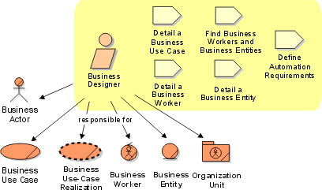

Role:
Business Designer
The business designer role details the specification of a part of the
organization by describing the workflow of one or several business use cases.
This role specifies the business workers and business entities needed to realize
a business use case, and distributes the behavior of the business use case to
these. The business designer defines the responsibilities, operations,
attributes, and relationships of one or several business workers and business
entities.

Staffing 
A person acting as business designer needs to be a good facilitator and have
adequate communication skills. Knowledge of the business domain is helpful, but
not necessary for everyone acting in this role. The business designer needs to
be familiar with tools used to capture the business models.
A business-process analyst is prepared to:
- Understand customer and user requirements, their strategies, and their
goals.
- Facilitate modeling of the target organization.
- Discuss and facilitate a business
engineering effort, if needed.
- Take part in defining requirements on the end-product of the
project.
Copyright
© 1987 - 2001 Rational Software Corporation
| |

|
 Roles and Activities >
Roles and Activities >
 Business Designer
Business Designer